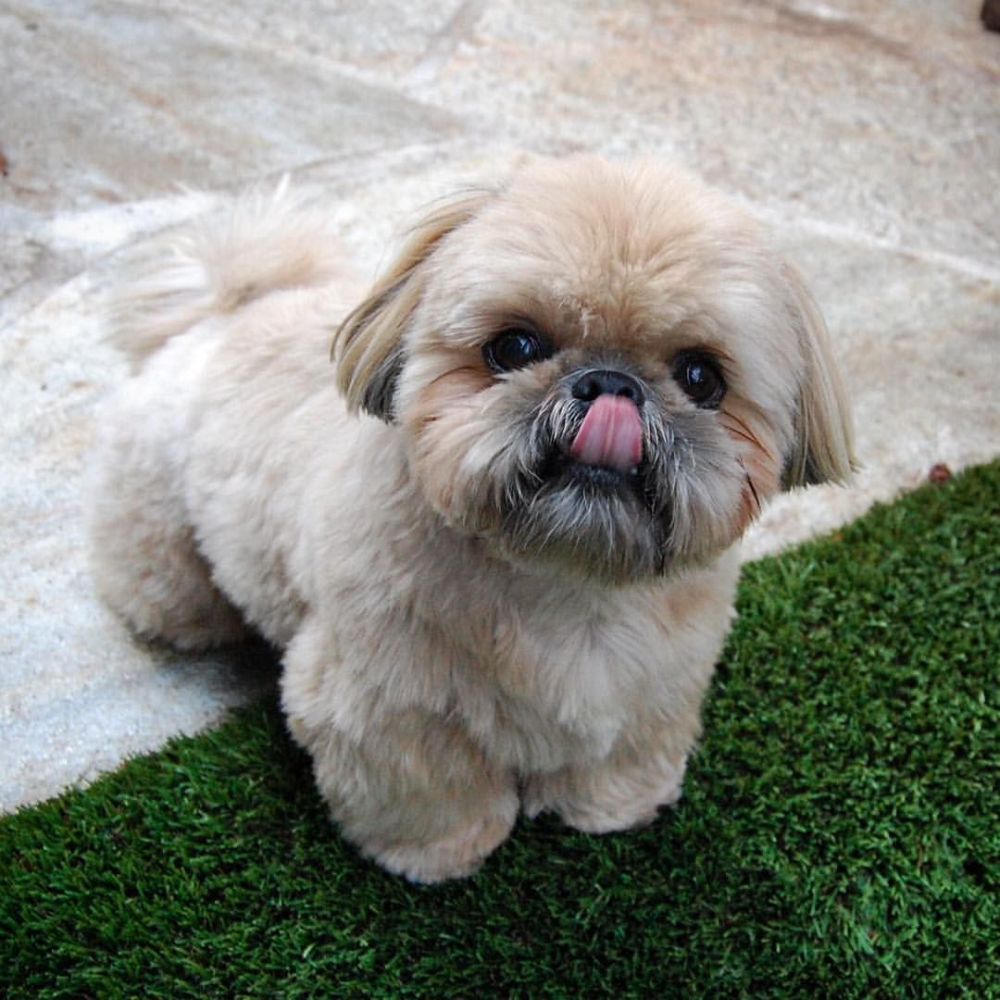

Shih Tzus are a small breed of dog that originated from China. The name Shih Tzu comes from the Chinese language and it means "lion dog". This is due to their long, flowing hair and their smushed faces and little black nose. They were originally mainly owned by those who were either royal or wealthy; who used the dogs as foot warmers/predators to vermin. Nowadays, these tiny pups would rather be sitting in your lap or simply just chilling around your house. An interesting fact about these dogs is that they are hypoallerginc (even though they have long hair), which makes them a very good choice for those with allergies. Their temperment is described as affectionate, extroverted, and playful.
Shih Tzus have a very unique look compared to other dog breeds, which allows them to be distingushed very easily. Shih Tzus are a toy breed of dog. They weigh from 9-16 pounds and are about 9-11 inches tall. They have a life span of 10-17 years (12 years on average), which is a fairly long time for a dog. A lot of Shih Tzus have an underbite, which is a big sign of this breed. There are some basic characterisitcs to look for in a Shih Tzu:
| Nutrition | Health | Excercise | Training | Grooming |
|---|---|---|---|---|
| Healthy, quailty dog food. Homemade is a good option. | Prone to hip dysplasia, obesity, and eye issues. | Regular walks will suffice. | Stubborn, so use positive reinforcement. | Regular brushing and bathes. |

I have two Shih Tzus at home and their names are Sonny and Leo. Sonny is almost 5 and he has tan, white, and black fur. Leo is 3 and he has black, white, and grey fur. They are both boys who play like crazy!Their favorite game is tug of war with a stuffed animal. Those boys are my little babies and I miss them very much when I am at school. I believe that Shih Tzus are one of the most cuddly breeds; both of mine are like my shadow because they always follow me around and love to be near me. They are spoiled rotten for sure, but they are very sweet love bugs.